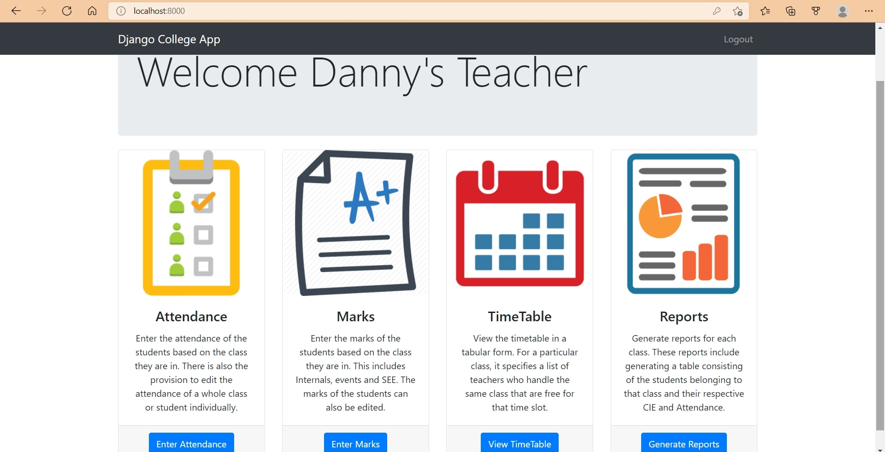

A basic college portalDjango College App
Done Using Django and SQLite3
Done Using Django and SQLite3
For this project, this was done a few months after I graduated from San Francisco State University. Still on the lookout for work, I decided to do another college website solo using Django, this time using SQLite3 as my database. Unlike my other previous project for a college website, Gator Grub, where I have worked together with a software engineering group in university, this was a college app that would serve very much like the student / teacher portal of my university's website.
To run the website, simply run in a terminal "python manage.py runserver." In this website, though it is supposed to be basic, I have decided to simply give it a title of "Django College App" for the current moment. In this, it has the capability to register new admins, where they will be the only ones that could sign into "localhost:8000/admin." To register a new admin, simply run "python manage.py createsuperuser." The current default password for every registered admin is "project123." These admins, once they sign in, are able to register new teachers, students, courses, or they could assign students or teachers to specific courses. Admins could do many more things as well.
Once a new teacher or student is registered by the admin, they may now log into "localhost:8000" using their newly registered username and password. Whether they are logged in as a student or teacher, students can either attend their course, or teachers can mark absence on missing students. Teachers can also do more, such as adding new assignments or placing marks on students' assignment scores. To log back out, they may do so simply at the corner of their screen by clicking on "Logout," where the user will be required to log back in if needed.